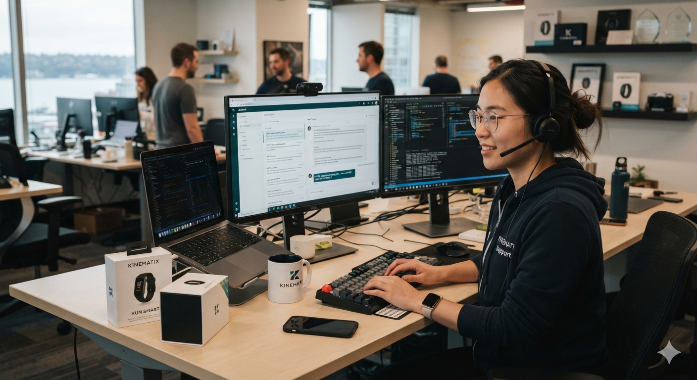

No juggling multiple applications. No scattered data. No IT team needed on your end. We handle everything.
We design, deploy, and maintain custom solutions tailored directly to your workflow.
Most organizations juggle a dozen different software tools, paying steep monthly fees for disconnected systems that don't talk to each other. We build one custom, deployable solution — hosted and managed entirely by us — that ties it all together. We work off the data you already have, or help you start tracking what's missing, and we're built from the ground up to never need direct access to your live records to do it.
Solving a bottleneck doesn't always mean new software — sometimes it just means removing the manual steps in between. We build automations that connect the tools you already use and handle the repetitive work end-to-end: finding leads and sending campaigns once you hit "go," tracking people through every stage of a process, or flagging issues before they become problems.
Resolve up to 80% of routine customer support tickets automatically using the AI and RAG architecture. Intelligent, human-like email resolutions, 24/7.
Replies are timed dynamically so customers get rapid, warm support without feeling like they're talking to a robotic auto-responder.
Sensitive topics, health data, complex accounts, and private information are redirected straight to human staff.
Replace $3,000+/mo third-party helpdesk software with a lightweight serverless script running directly on your preferred workspace.
Most organizations spread their operations across multiple different software subscriptions, creating expensive silos that don't communicate with one another — so someone ends up copying and pasting between systems just to keep things moving. We do something entirely different. We build one custom, deployable solution — hosted and managed by us — that ties your existing tools together and brings your essential work into one place.
No more copying and pasting between platforms or paying for bloated software features you never use. Your team works efficiently from one custom-built hub.
Off-the-shelf software forces you to adapt to their rules. Our solutions are custom-built to match your exact operations, and we thrive on tackling the unique, complex problems your organization throws at us.
The workflows that used to mean logging into multiple tools now run through the one solution we built for you.
Structured, exportable records that hold up when regulators or your board come asking — no manual prep required.
The manual steps that used to slow your team down get automated away instead of just flagged.
We don't need your live records to build your automation. We ask for your data's schema — the structure, not the contents — and build from that.
Our Guarantee: Every automation is cross-tested against synthetic data that mirrors your schema before it ever runs against your real systems. In most engagements, we never need direct access to your live data at all.
We build automations that plug directly into the tools you already use, so the manual, repetitive parts of a workflow just happen on their own. Your team sets the intent — the system does the legwork.
Your team creates the campaign — our system finds the leads, sends the outreach, and tracks who responds. No manual list-building or spreadsheet juggling.
Automatically move people through every stage of your process, flagging anyone who falls behind schedule or needs follow-up.
Get notified the moment something needs attention — a missed deadline, a stalled case, a threshold crossed — instead of catching it during a manual review.
Stop copying and pasting between platforms. We connect the systems you already use so information moves on its own.
Discover how organizations are using custom solutions and automations to eliminate their software silos, surface the insights that matter, and cut out manual busywork.

sports_score Sports TechWe built the VP of Global Sales at a sports technology company an automated system that could send human-like responses to product inquiries right from their Gmail.
View Case Study arrow_forwardWe built an automated tracking system for an addiction recovery center out of Kentucky, and the data showed something interesting: seasonal changes had a measurable effect on participant behavior and treatment progress.
View Case Study arrow_forwardIf your team is still logging into several different tools just to get one job done, you're carrying a manual overhead you don't have to.
Result: A frustrating administrative hassle every single week.
We connect the systems you already use and automate the steps in between, built to match your exact process — so the work happens on its own after your team sets it in motion.
Result: Complete operational efficiency with zero manual effort.
Handing a vendor full access to your live systems is a real risk — especially when that data includes client records, health information, or anything else sensitive. We do it differently. Instead of asking for your actual data, we ask you to show us how it's structured.
You show us your schema — the column names, data types, and how your systems are organized — not the records themselves. We use that structure to build and cross-test your custom solution or automation against synthetic data that mirrors it exactly, before it ever runs against anything real:
Connected systems fluctuate when the platforms they rely on update or change. If you hire a typical web developer, they will build your solution, send an invoice, and leave you to figure it out when something breaks.
We do things differently. Through our structured monthly partnership plans, we take complete responsibility for your solutions and automations. If a connection breaks or an automation flags an error, you send a quick message and we jump on it immediately—fully resolving technical disruptions within 24 hours.
Perfect for stable organizations. Includes 24/7 uptime monitoring, background system maintenance, and rapid email support for fixes. Any future additions or new automations are billed transparently per request.
Designed for evolving organizations. Includes direct phone access for high-priority troubleshooting and covers the dynamic building of new features, automations, or integrations at no additional cost.
Our highest level of strategic partnership. We act completely as your internal solutions department. Enjoy zero boundaries on your growth: unlimited iterations, complex integrations, custom structural changes, and scaling adjustments without ever seeing a single extra line item on an invoice.
We have been building and managing custom solutions and automations for organizations across the United States, replacing hours of error-prone, manual work with systems that just run.
I just wanted to take a moment to say how blown away I am by the dashboards and data visualizations you created. These comparative charts, trait analyses, and source integrations are absolutely incredible.
CEO & FOUNDER
Dr. Roop — Trait Based Transformation | USA
20 minutes. Tell us your biggest data tracking or reporting headache.
Custom-built to match your exact workflow, tested against synthetic data first. Ready within days.
Updates, integrations, fixes, and hosting. All handled 100% by us.
Book a free 20-minute call. Clear terms, no commitment. We will tell you exactly what we can build for your workflow.